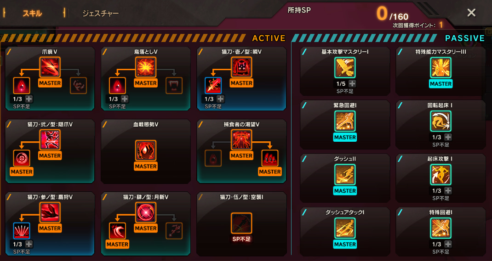
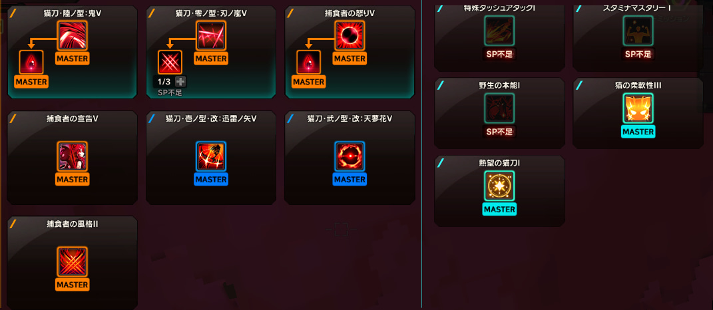
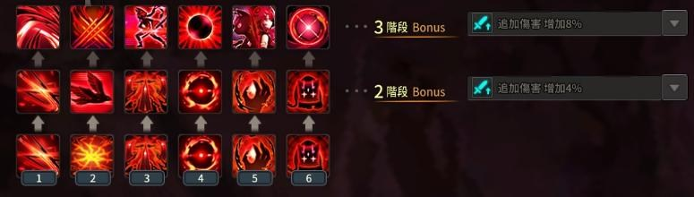

琪・阿露爾
「琪・阿露爾」是一位自尊心非常強的16歲少女，誕生於貓型態的靈魂暗影，藉著吃貓屍體獲得擁有靈魂暗影所沒有的情感。為了找到出生原因四處遊蕩，直到遇見了名叫「阿露爾」的少女，少女遂將她的靈魂暗影取名為「琪」。某天阿露爾遭受靈魂暗影攻擊而死，琪相當難過，渴望自己是人類就能拯救阿露爾，就藉著神秘力量幻化成為「琪・阿露爾」，且在擁有少女的身體之後退出虛空並喪失記憶。
琪・阿露爾以吸收靈魂暗影渴望者能量生存，很容易變質成渴望者行者，但琪・阿露爾渴望成為人類，開始製作人類的情感能量；而在虛空內整理渴望者行者的洛斯卡，面對琪・阿露爾的虛空異形，最後決定要和靈魂行者一樣製作一個平行世界來守護她，同時確認琪・阿露爾裡面所殘存的靈魂能量是非常大且優越，因此決定把「渴望」當作琪・阿露爾的一技之長！
角色技能配點及招式順序
  說明
技能特性為黑血及噬血，黑色是減少自身HP來獲得攻擊及暴擊率(傷害)，噬血則與之相反會獲得回覆HP的能力，大多數情形會選擇黑血來獲得攻擊，少數則是像3-3選擇點噬血，因為會回復靈魂值。大多後期玩家並不會點1-1及1-3因為這對於接招的連續性有關和傷害效益並不大，所以會選擇拿掉並增加其他點，如耐力回復，接招順序因人而異，但大多都會是1階段和2階段相同來直接或2階段和3階段的能力，而旁邊的能力，有人選擇傷害也有人選冷卻讓招式接技更快，本人選冷卻。(為了看背景圖文字才在下面
前傳故事及二轉and三轉
他人單刷副本影片
懶人網站
靈魂行者_巴哈版 技能心得 勳章選擇 後期副本前置任務 隱匿打法 三轉流程